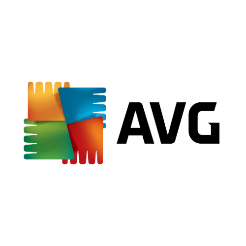

Bufferen is zo frustrerend! Daarom is streamen of het downloaden van bestanden met een langzame internetverbinding gewoon geen optie. Helemaal geen probleem! Je kunt uit meer dan 5500 NordVPN-servers in 59 landen kiezen en de snelste VPN ervaren. Meer servers betekent minder belasting, en dankzij het uitgebreide aantal locaties vind je er altijd wel eentje in de buurt.